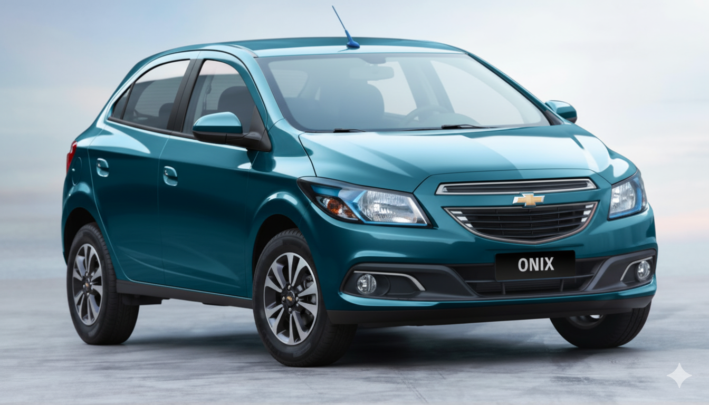

, “A principal novidade do Chevrolet Onix é a adição de versões com câmbio automático de seis marchas, além de uma nova cor: Azul Sky. Há dois tipos de motorização disponíveis. A 1.0 flex desenvolve, com etanol, 80 cavalos de potência a 6.400 rpm, e tem torque máximo de 9,8 kgf.m a 5.200 rpm. Já a 1.4 flex desenvolve, com etanol, 106 cavalos de potência a 6.000 rpm, e tem torque máximo de 13,9 kgf.m a 4.800 rpm. O carro tem direção hidráulica, garantindo uma dirigibilidade suave, quatro portas e porta-malas com capacidade para 280 litros.
